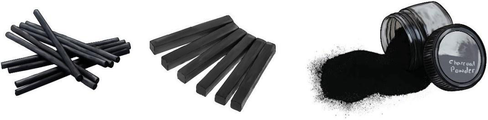
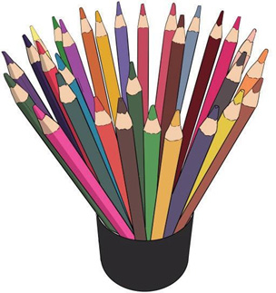

that make a drawing very dark.Charcoal is made from burnt sticks or compressed powder held together by gum or wax binder.Charcoal is produced in different shapes and forms such as sticks, bars, pencils or powder.The materials range from soft to hard, depending on the ratio of charcoal powder to wax binder used.Figure 2.7 shows varieties of charcoal media.

Charcoal sticks
Charcoal bars
Charcoal powder
Figure 2.7: Varieties of charcoal
Coloured pencils:
These are types of pencils which contain colour.They have cores which are wax or oil-based and made in a variety of colours.Colour pencils can be used in drawing when an artist wishes to apply colours to an image.They are used when an artist intends to show a realistic impression of a particular object.Coloured pencils are also good for working with details.Figure 2.8 shows coloured pencils.

Figure 2.8: Coloured pencils
Pen and ink:These are also known as drawing pens.Pen and ink are special media which are designed for drawing.They are made in different types, sizes and forms.Pen and ink use a special ink medium that has a high tonal value that cannot be rubbed or erased by using an eraser.Figure 2.9 shows a pen and an inkpot.